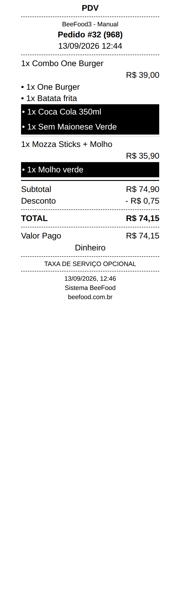

<div class="slide slide--capa">
  <div class="topo">
    <span class="logo"></span>
    <span class="data">15/09/2026</span>
  </div>

  <div class="pilha g32" style="margin-top: 60px">
    <span class="pilula pilula--novidade">Novidade</span>
    <h1 class="titulo">Cansou de bebida esquecida na sacola? 🥤</h1>
    <p class="subtitulo">
      Sem canetinha na lata, sem grito na cozinha. O cupom marca sozinho.
    </p>
  </div>

  <!-- A imagem da capa é o resultado da novidade: cupom real do manual #99,
       recortado em UMA linha destacada (a bebida). O corte é declarado aqui no
       aspect-ratio, e não num arquivo novo — 600x390 para no fim exato da linha
       da Coca Cola, antes do "Sem Maionese Verde" que também sai marcado no
       cupom de verdade. Capa com duas ou três linhas pretas dilui o assunto e
       contradiz o slide 7. -->
  <div class="sangria inclinado" style="top: 760px; right: 40px; width: 620px">
    <!-- Cantos de baixo quase retos: o corte cai exatamente na faixa preta, e o
         arredondamento de 24 px comia a ponta dela. -->
    <div class="recorte recorte--topo"
         style="aspect-ratio: 600 / 390; border-radius: 24px 24px 5px 5px">
      
    </div>
  </div>

  <div class="empurra"></div>

  <div class="rodape">
    <span class="arraste">Arraste &rarr;</span>
  </div>
</div>
